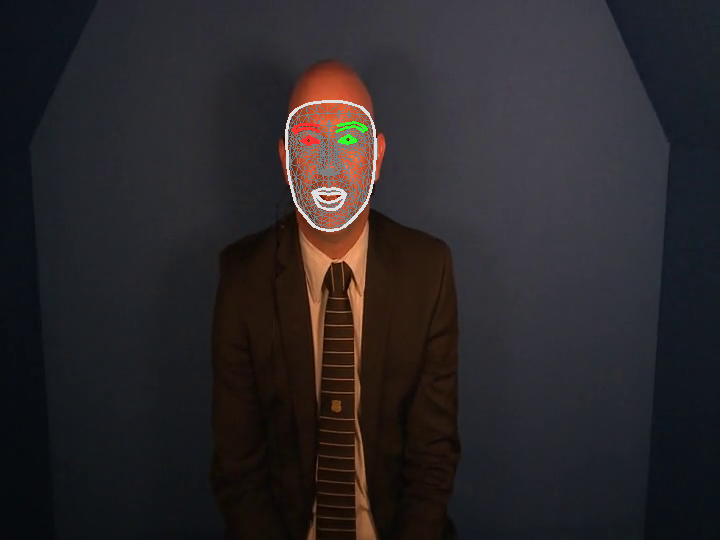

MediaPipe
MediaPipe is a suite of tools produced by Google which includes a system for detecting faces in video media, and producing landmark coordinates and scores for facial features.
LaBB-CAT includes a module that integrates with MediaPipe call the MediaPipe Annotator.
The annotator can produce four outputs, each of which is optional:
- an alternative
webmversion of the video, visually annotated with facial features, - individual video frame images, annotated with facial features,
- a JSON file for each video frame representing the blendshape landmark coordinates of each facial feature, and
- instantaneous numeric score annotations for each facial feature.

Prerequisites
Currently the module has only been tested on Unix-like systems (i.e. Ubuntu Linux, and the LaBB-CAT Docker image)
The following must already be installed on the same machine that LaBB-CAT runs on:
- Python 3
- Support for Python virtual environments (venv)
Support for Python ‘venv’ can be installed on Ubuntu-like systems with the command:
apt install python3.10-venv
Installation
During installation, the annotator needs to be able to connect to the internet so that required Python packages and model files can be installed.
(Once installed, the annotator should function without an internet connection.)
- In LaBB-CAT, select the layer managers option on the menu.
- Click the link at the bottom of the page:
List of layer managers that are not yet installed - Find MediaPipeAnnotator in the list, and press its Install button.
- Press Install.
LaBB-CAT will check for the required prerequisites, and download/install the MediaPipe software and models. You will see a progress bar and status messages during this process. - Once everything is installed, you will see an information page titled “MediaPipeAnnotator” open in a new browser tab.
Close the browser tab that just opened.
MediaPipe and LaBB-CAT’s integration module are now installed.
Configuration
Media Track for Annotated Video
For each video, the annotator can produce a sound-less webm video of the original video input, annotated with the detected facial features.
If you want this video, LaBB-CAT needs a distinct place to store it - i.e. a new ‘media track’ that differentiates the annotated video from the origina video, for each transcript.
If you don’t want an annotated video file, you can skip these steps.
- Select the media tracks option on the right of LaBB-CAT’s menu at the top of the page.
You will see a list of Media Tracks that most likely has only one item called “Media”.
Each media track is distinguished by a unique ‘suffix’ - i.e. a string of characters that is appeneded to the end of the file name to distinguish it from the main media file. For example, for the video file called AP513_Steve.mp4 we will configure the annotator to produce an annotated video called something like AP513_Steve-facial-features.webm.
The ‘suffix’ in this example would be the -facial-features part of the name.
- The row of headings at the top of the Media Tracks are a form you can fill in to create a new track.
Fill in the following details:- Suffix:
-facial-features - Description: “Video annotated with facial features, with no audio track.”
- Suffix:
- Press the New button to the right.
The new track will be added to the list.
MediaPipe Project
By default, the annotator produces a large number of annotations on a large number of annotation layers:
- a layer for the blendshapes file,
- a layer for the annotated frame images file,
- a layer for each facial featre that is tracked (there are 52 of these)
For organizational purposes, it’s a good idea to create a ‘project’ for the MediaPipe data, so that layers can easily be all hidden or shown as required.
- Select the projects option on the menu at the top.
- Fill in the following details on the form at the top of the page:
- Name:
mediapipe - Description: “Layers of facial-feature annotations produced by MediaPipe.”
- Name:
- Press the New button on the right to add the project.
MediaPipe Configuration Layer
The instantaneous frame annotations that are produced by the annotator relate only to the video media, and are not assigned to a participant in the transcript. As they don’t relate directly to word annotations or speaker turns, they go on a ‘span layer’.
- Select the span layers option on the menu.
- On the header row form, fill out the following details:
- Layer ID:
blendshape - Type: Text
- Alignment: Instants (there will be a blendshape annotation for each video frame in which a face is detected)
- Manager: MediaPipe Manager
- Generate: Always
- Project: mediapipe
- Description: “Blendshape coordinates for each frame”
- Layer ID:
- Press the New button on the right to add the layer.
You will see the annotators configuration page. The top section of the page relates to saving the blendshapes, annotated video and frame images, and what to include in the visual annotations.
- If you want a video visually annotated with tracked facial features, and you have created the corresponding media track, set the Annotated Video Track setting to the track you created before.
- If you want individual frame images visually annotated with facial features, for the Annotated Images Layer, select the [add new layer] option, specify a name for that layer (or use the default layer name) and press OK
- There are three options for what aspects of the facial features you would like visually represented, tick the options you prefer.
The annotator runs facial feature detection on each frame in the video, and creates annotations only for frames in which detection was successful. The annotator can store the number of frames with faces in a transcript attribute. This can be useful for identifying videos for which few frames had faces found, in order to better calibrate the recognition tresholds.
- If you want a count of frames with detected faces, for the Annotated Frame Count setting, select the [add new layer] option, and press OK.
The middle section, labelled “Face Blendshapes”, allows you to select which facial featured you’d like numerical annotations for, for each video frame. There are 52 facial features tracked, and a numeric rating is assigned to each one, for each frame in which a face is detected. By default, a layer is create for each feature.
- For any features that you do not want the rating stored for each frame, select [none] in the dropdown list of options.
The bottom section allows you to calibrate thresholds for face/feature detection when processing video frames. These can probably be left with their default values, but if you find that no frames (or only a few) are annotated, you might try a lower value e.g. for the min_face_detection_confidence theshold.
- Once you have the configuration options you want, press Set Parameters at the bottom.
Now the MediaPipe annotations are configured, you can either generate annotations for you entire corpus, by pressing the Regenerate button, or you can target specific transcripts by:
- locating them on the transcripts page,
- ticking their checkboxes,
- pressing the Generate button at the top,
- selecting the blendshape layer you just created, and
- pressing Generate to run MediaPipe on only the ticked recordings.
The amount of time it takes to generate annotations can be quite long, and depends on how long the videos are, how many there are, and how much computing power your LaBB-CAT server has.
While generating annotations, the mediapipe may show warnings like the following:
…OpenCV: FFMPEG: tag 0x30387076/‘vp80’ is not supported with codec id 139 and format ‘webm / WebM’ WARNING: All log messages before absl::InitializeLog() is called are written to STDERR I0000 00:00:1748469849.962542 71 task_runner.cc:85] GPU suport is not available…
Do not be alarmed by these apparent problems, faces will be annotated anyway.
If you find that no faces are found in your videos, the most likely solution is to set min_face_detection_confidence to a lower value.
Accessing Annotations
Different types of annotations are accessible in different ways.
Annotated Frame Count
You can get a list of annotated frame counts from the transcripts page:
- Select the transcripts option on the menu at the top.
- Press the Export Attributes button.
A dropdown list of transcript attributes will appear. - Ensure that the
transcriptandmediapipeFrameCountoptions are ticked. - Press the Export Attributes button.
You will receive a CSV file, with a column containing the transcript/recording name, and a column with the number of video frames in which a face was detected.
Annotated Video
If an Annotated Video Track has been specified, an alternative version of the video is created, with no audio, and with the detected facial features painted on to the video frames.
You can view this video directly in the transcript page, by ticking the -facial-features track on the top-right of the page.
You can also download the video file by using the webm link to the right of the track’s name.
Annotated Frame Images
If you specified an Annotated Images Layer, then the visually annotated frame images are created on that layer.
The images can be seen directly in the transcript page:
- Open the transcript page of a recording that has been annotated.
- Select the Layers tab to list selectable layers.
- Tick the mediapipe project on the left, to list all of the MediaPipe layers.
- Tick the mediapipeFrame layer (or whate layer name you specified on the configuration page)
You will see a number of annotations appear on the page, labelled with a ‘camera’ icon. - Hover your mouse over one of the camera icons to see the annotated image.
You can open the image full size in your browser, save it, etc. by clicking on the image.
Although only one link per word is visualized on the transcript, there is on image for every video frame in which a face was located. They can all be accessed using LaBB-CAT API, for example using the getFragmentAnnotationData function of the nzilbb.labbcat R package, or the nzilbb-labbcat Python package.
Blendshape Coordinates
For each frame containing a face, the blendshape layer has JSON-encoded data that include the facial feature coordinates and the blendshape feature scores.
These are accessible on the transcript page in a similar way to the frame images; if you select the blendshape layer icons will appear in the transcript text which, if clicked, will download a JSON file containing mediapipe’s recognition result.
As with annotated images, these can all be accessed using the getFragmentAnnotationData function of the nzilbb.labbcat R package, or the nzilbb-labbcat Python package.
Feature Scores
In addition to raw JSON-encoded data, numeric feature scores for each facial feature are available as instantaneous numeric annotations on layers named after the feature they score.
Although these can be visualized on the transcript page, they are perhaps more usefully extracted using the getFragmentAnnotations or getFragments functions of the nzilbb.labbcat R package to extract score values between targeted start/end times, for targeted facial features.
For example the following R code will extract a CSV file with selected feature scores during given time intervals:
csvFragments <- nzilbb.labbcat::getFragments(
url, matches$Transcript, matches$startTime, matches$endTime,
layer.ids = c("jawOpen", "eyeBlinkLeft", "eyeBlinkRight"),
mime.type = "text/csv")